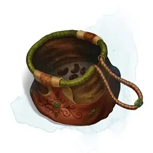

Сумка с бобами
Bag of Beans
Чудесный предмет, редкий

Рекомендованная стоимость 501-5 000 зм
Внутри этой тяжёлой тканой сумки находятся 3к4 сухих боба. Сумка весит 1/2 фунта, плюс 1/4 фунта за каждый боб, находящийся внутри.
Если вы высыпаете содержимое сумки на землю, то они взрываются с радиусом 10 футов. Все существа в этой зоне, включая вас, должно совершить спасбросок Ловкости Сл 15, получая урон огнём 5к4 при провале или половину этого урона, если спасбросок был успешен. Этот огонь также поджигает легковоспламеняющиеся объекты в зоне поражения, которые никто не несёт и не носит.
Если вы извлечёте боб из сумки, посадите его в землю или песок и затем польёте его, то боб спустя 1 минуту после того, как вы посадили его, произведёт некоторый эффект. Мастер может сам выбрать эффект из таблицы, может определить эффект случайным образом, или же придумать свой вариант.
| к100 | Эффект |
| 01 | Вырастают 5к4 поганок. Если существо съедает поганку, то необходимо бросить любую кость для определения эффекта. При выпадении нечётного числа существо должно преуспеть в спасброске Телосложения Сл 15, иначе оно получит урон ядом 5к6 и становится отравленным на 1 час. Если же выпадет чётное число, то существо получает 5к6 временных хитов на 1 час. |
| 02-10 | Появляется гейзер, фонтанирующий на высоту 30 футов потоками воды, пива, ягодного сока, чая, уксуса или масла (по выбору Мастера) в течение 1к12 раундов. |
| 11-20 | Появляется трент [treant]. Существует 50-процентный шанс, что появившийся трент будет обладать хаотично-злым мировоззрением и нападёт. |
| 21-30 | Появляется ожившая, но неподвижная каменная статуя, похожая на вас и выкрикивающая в ваш адрес угрозы. Если вы уходите от неё, а кто-то другой приближается к ней, статуя описывает вас как самого гнусного злодея и побуждает новоприбывших найти и атаковать вас. Если вы находитесь с ней на одном плане существования, то статуя знает ваше местоположение. По прошествии 24 часов статуя перестаёт быть ожившей. |
| 31-40 | Появляется походный костёр с синими языками пламени ,который горит в течение 24 часов (или пока не будет погашен). |
| 41-50 | Вырастают 1к6 + 6 визгунов [shrieker]. |
| 51-60 | Наружу выползают 1к4 + 8 ярко-розовых жаб. Всякий раз, когда кто-либо прикасается к жабе, та превращается в монстра (размером вплоть до Большого) по выбору Мастера. Этот монстр существует в течение минуты, после чего исчезает в клубах ярко-розового дыма. |
| 61-70 | Из норы выползает голодная панцирница [bulette] и немедленно нападает. |
| 71-80 | Вырастает фруктовое дерево. На дереве растёт 1к10 + 20 фруктов, 1к8 из которых действуют как магические зелья (определяются случайным образом), в то время, как один из фруктов, будучи съеденным, действует как пищевой яд на выбор Мастера. Дерево исчезает спустя 1 час. Сорванные фрукты остаются, сохраняя свои магические свойства в течение 30 дней. |
| 81-90 | Появляется гнездо, содержащее 1к4 + 3 яиц. Существо, съедающее одно из этих яиц, должно совершить спасбросок Телосложения Сл 20. При успехе существо навсегда увеличивает на единицу значение своей самой низкой характеристики. Если две или более характеристики имеют минимальное значение, то случайно выбирается какая-либо одна. При провале существо получает урон силовым полем 10к6 от внутреннего взрыва магической природы. |
| 91-99 | Вверх возносится пирамида с квадратным основанием 60 × 60 футов. Внутри неё находится саркофаг с покоящейся в нём лордом-мумией [mummy lord]. Эта пирамида считается логовом лорда-мумии, а в саркофаге находится сокровище на усмотрение Мастера. |
| 00 | Вырастает гигантский бобовый стебель такой высоты, какой будет угодно Мастеру. Мастер также решает, что ждёт добравшегося до его вершины персонажа: ему откроется величественный вид, он окажется в замке облачного великана [cloud giant] или же вершина стебля приведёт его на другой план существования. |